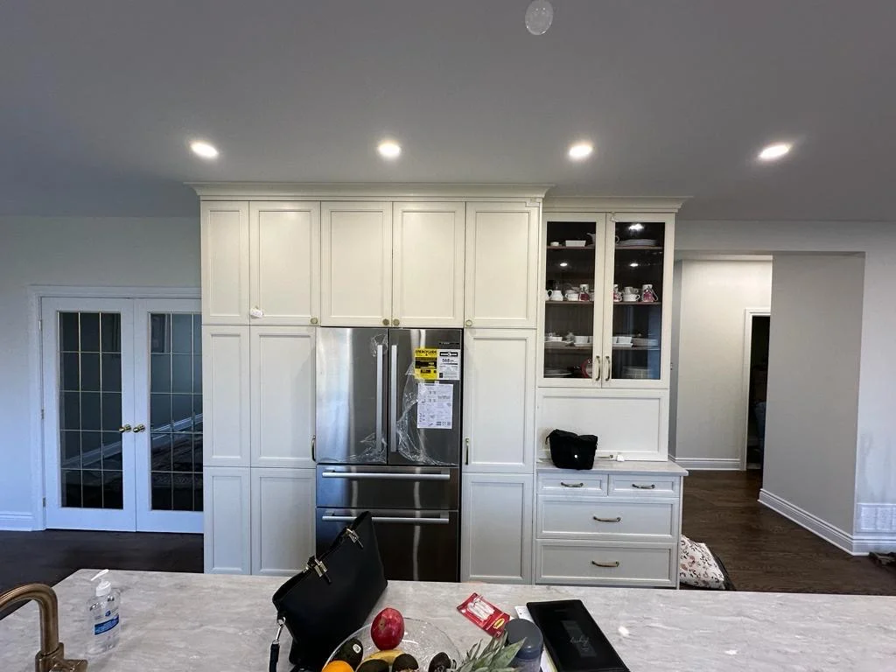
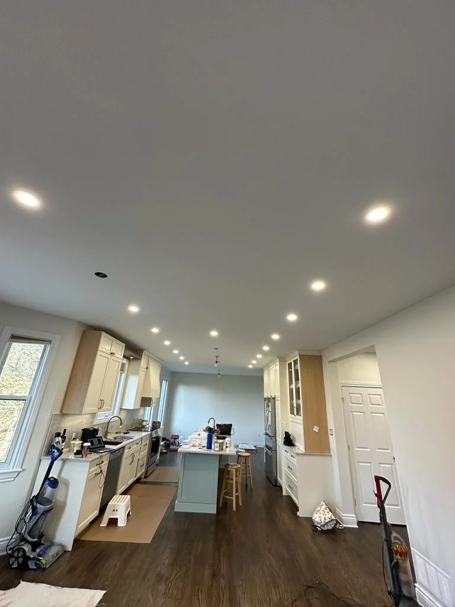
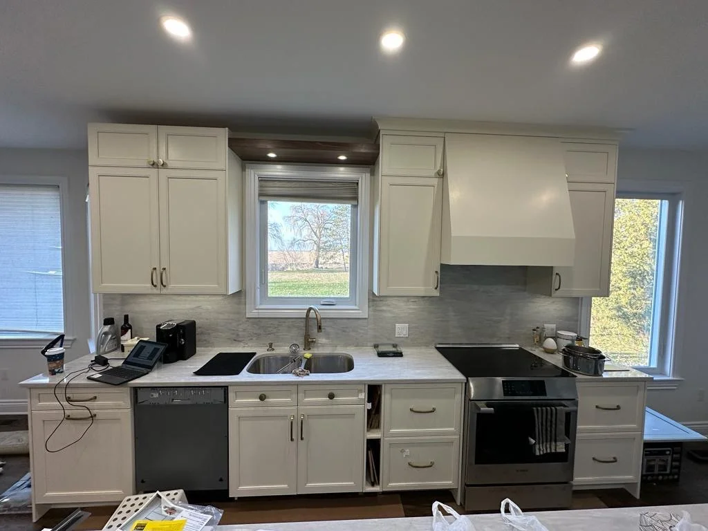

Drywall Repair & Patching
Water damage, cracks, and holes patched and texture-matched.
Learn More →Painting · Scarborough, ON
From single-room interior painting to a full exterior repaint, we prep, prime, and apply premium coatings for a durable, even finish across Scarborough, Toronto and the GTA.
Every interior painting job starts with prep: patching, sanding, and priming, before a drop of finish coat goes on. It's the difference between paint that looks good on day one and paint that still looks good a year later, and it's why our finished kitchens and living spaces show clean cutlines around pot lights, cabinetry, and backsplash edges.
Exterior painting follows the same prep-first approach: surface cleaning, scraping and priming bare or worn areas, and coatings chosen for Ontario's weather. Jobs are scheduled around the forecast so the finish cures properly, with careful trim, fascia, and soffit detail work.
Because we also handle drywall repair in-house, colour-matching and touch-up work after a patch is a seamless add-on, with no separate contractor and no mismatched sheen.
Paint Sheen
Sheen is the single decision that most affects how a finished room looks, and the one homeowners are least often walked through. Higher sheen wipes clean more easily but shows every imperfection in the wall underneath.
The rule that follows: the higher the sheen you want, the better the drywall finishing beneath it has to be. Because we do both the taping and the paint, we can tell you up front whether the wall is ready for the sheen you have picked.
Recent Work

Finished Kitchen

Ceiling & Pot Light Finish

Kitchen Wall Finish
Keep Exploring
Water damage, cracks, and holes patched and texture-matched.
Learn More →Scrape, skim-coat, and repaint for a modern, smooth ceiling.
Learn More →Multi-coat taping and mudding so seams disappear under paint.
Learn More →Common Questions
Two finish coats as standard, over primer where the surface needs it. Bare drywall, patches and stains all get primed first, otherwise they absorb differently from the surrounding wall and show through as patchy sheen once the topcoat dries.
Satin or semi-gloss in bathrooms and busy hallways, because both are washable and handle moisture. The trade-off is that higher sheen reveals more of the wall surface underneath, so the drywall finishing has to be up to it.
Yes, interior work covers walls, ceilings, trim, doors and closets, cut in by hand at every edge. Trim and doors are normally done in a higher sheen than the walls for durability.
We move and cover what is practical and protect floors before starting. It helps if small items, wall hangings and anything fragile are cleared beforehand, but the heavy lifting is part of the job.
Yes, exterior surfaces are prepped and coated with products rated for Ontario freeze-thaw cycles. Exterior scheduling depends more on weather than interior work does, since the surface has to be dry and the temperature within the product's range.